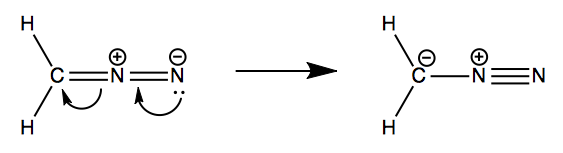
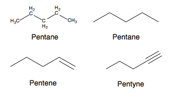

We beleive familiarity builds confidence. We believe simple and straightforward lessons are most effective. We consolidate all the resources you need one place so you do not have to distract yourself with endless Google searches. We believe that strengthening fundamentals are at the core of student success in the classroom.
Chapters 1 thru 3 are an overview of the genercal chemistry
concepts you will encounter in organic chemistry.
Chapters 4 thru 22 focus on the heart of organic chemistry:
reactions and mechanism. There will also be some lab specific
resources avalible help along the way.
A recurring theme that we see in organic chemistry is that molecular structure determines the chemical properties and behaviors of molecule or compound. Remember this theme as we review basic general chemistry and move into organic chemistry: molecular structure determines chemical property. Familiarity builds confidence!
• Atoms are the collection of a subatomic particles found in all
matter.
• These subatomic particles are called protons, neutrons, and
electrons.
• Each one has a charge: Protons (+1), neutrons (0), and
electrons (-1).
• Electrons are located in orbitals: regions in 3D space outside
the atomic nucleus.
• Orbitals can have different names, shapes and properties. The
s and p orbitals will be most relevant.
• Orbital, which also includes electrons, are used in chemical
bonding.
• S orbitals bond or overlap head-on along the internuclear
axis.
• P orbitals overlap above and below the internuclear axis.
• There are two major bonds: ionic and covalent.
• Ionic bonds involve charged species or ions. These bonds
occurs when on elemental species donates electrons to another
species to form charged molecules. Ex: NaCl
• Covalent bonds occur when two species share electrons
pairs.
Covalent bonds can be triple, double, or single bonds.
• The atom and dot representation of covalent bonds are called
Lewis structures.
• Covalent bonds are formed so each atom has a complete octet or
8 electrons with some atoms serving as exceptions: Helium,
Hydrogen, and Boron.
• The possible resonance structures for diazomethaneare is shown
below.
• Resonance
structures are molecules that have more than one correct Lewis
structure. The true structure is called a resonance hybrid.
• These structures are obtained by moving electrons. 
• A curved arrow is used to indicate the direction of electron
motion.
• Electrons are moved so that the octet rule can be obeyed in
the new Lewis structure.
• As you can see above the delocalization (or movement) of
electron causes each atom to gain a new relative charge based on
the electron distribution called a formal charge.
• To determine the formal charge of each atom we use the
formula: FC = # of valence electrons - # of assigned valence
electron
• Where the number of assigned valence electrons are the
electrons that are donated by that atom for form a covalent
bond.
• When a molecule has multiple Lewis structures, the preferred
structure will be the one with minimized formal charges or will
have the negative charge on the most electronegative atom.
• Based on the electron distribution the molecule can have a
dipole moment.
• Dipole moments is the net direction of the polarity within a
molecule.
• Dipoles exist in molecules with atoms of different
electronegativity values.
• Think of vector additions from physics when working out these
problems
• Remember that the number of bonds to a central atom often
results in a specific 3D orientation.
• Here is a table. Familiarize yourself with these shapes and
hybridizations. Keep them at the back for your head. These
shapes help predict product formation in organic reactions.
• Learning how to draw organic molecules is key to passing your
exams with time to spare. 
• Notice how in the condensed version converts carbon atoms to
vertices and hides the hydrogen atom.
• This representation is called the bond line formula.
• Vertices represent carbon atoms. If no other atoms are shown
then draw hydrogen bonds to each carbon until the octet rule is
obeyed. Ex: Terminal single bonded carbons in pentane are bonded
to 3 hydrogen atoms.